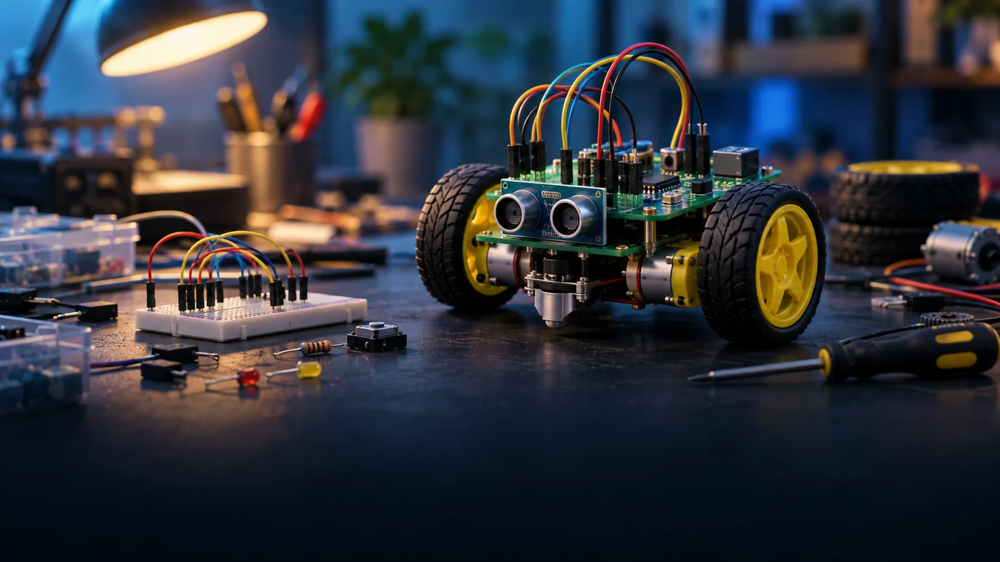

Build skills
A ten-day after-school coding camp introduced practical skills.
Apply ideas
A two-day makeathon focused on applying design thinking.
Shared purpose
Learning activities connected with the UN Sustainable Development Goals.
Education & participation / HISTORICAL PROJECT
STEAM for Social Good

An after-school coding camp and makeathon connected young people with design thinking and sustainable development.
A ten-day after-school coding camp introduced practical skills.
A two-day makeathon focused on applying design thinking.
Learning activities connected with the UN Sustainable Development Goals.